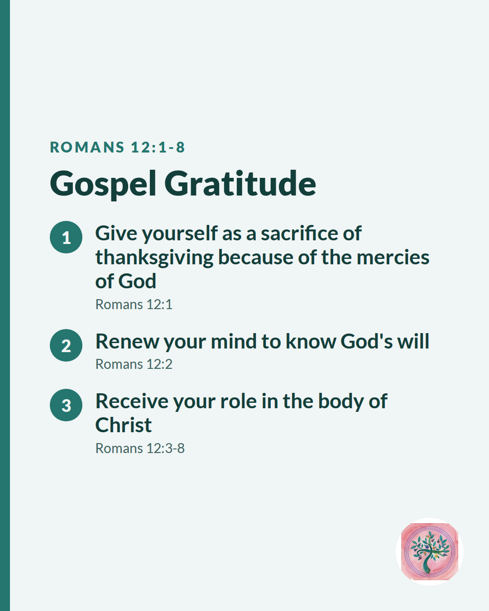
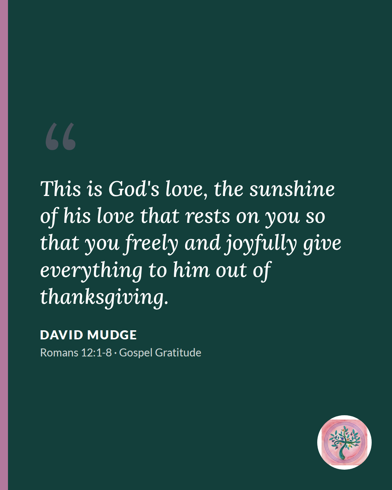

Everything here was made from one thing: the sermon you already posted. 7 graphics and 3 short video clips, with captions, scheduled across the week. Every quote is your preacher's own words, checked against the sermon.
Your week
Mon Nov 30
· 09:00Sermon recap

This past Sunday, we were blessed to have David Mudge, a guest preacher, open Romans 12:1-8 with us in a message called "Gospel Gratitude." Coming in Thanksgiving week, it was a good reminder of why we give thanks at all.
After walking through the mercies of God in Romans 1–11, Paul appeals to us (he doesn't command us) to present our bodies as a living sacrifice. We heard how this echoes the Old Testament sacrifice of thanksgiving, a joyful, freely given offering that celebrated God's salvation. It isn't a payment to God. It's the response of a loved child to a Father who has provided everything.
From that main point, we saw two applications. First, renew your mind to know God's will. Gratitude, prayer, Scripture, and worship are ways God transforms our hearts to love what he loves. Second, receive your role in the body of Christ. Each of us has been given gifts, and we use them to serve one another out of thanks, not to earn love we already have in Jesus.
If you weren't able to join us, we'd love for you to watch the full message. This week, take a moment in prayer to thank God for his spiritual blessings, and ask how you might serve in our church family.
Mon Nov 30
· 18:00Main points

This week in Romans 12:1-8, we looked at Gospel Gratitude. The main point: give yourself as a sacrifice of thanksgiving because of the mercies of God. Then two applications: renew your mind to know God's will (v. 2), and receive your role in the body of Christ (vv. 3-8). Which of these do you most need to hear today?
#GospelGratitude #Romans12 #SermonRecap #SouthOrlandoBaptist
Tue Dec 1
· 09:00Quote graphic

This is the heart of Romans 12:1. God has been so merciful to us in Christ that our response is gratitude, offered freely and joyfully, not out of fear or obligation. As we gather around tables this Thanksgiving week, we're reminded of the greatest reason to give thanks. What mercy of God are you most thankful for today? 🙏
#GospelGratitude #Romans12 #Thanksgiving #SouthOrlandoBaptist
Tue Dec 1
· 18:00Video clip (Reel)
Which is stronger, the north wind or the sunshine? In this story, the answer helps us see how God's love works. He doesn't force us. His kindness draws us to freely and joyfully give ourselves to him in thanksgiving. Watch this short illustration from Romans 12:1.
Wed Dec 2
· 09:00Quote graphic

God's love isn't a heavy weight pressing on us. It's like warm sunshine that draws out a joyful, willing response. Our giving back to him comes from being deeply loved, not from trying to earn anything. Take a moment today to rest in that love. How might gratitude change the way you spend your day?
#GospelGratitude #Romans12 #GodsLove #SouthOrlandoBaptist
Wed Dec 2
· 18:00Video clip (Reel)
When Paul says 'living sacrifice,' what picture does he have in mind? Not guilt or shame, but a joyful, freely given offering of thanks. Here's a short look at the Old Testament sacrifice of thanksgiving and why it points us to Jesus and to a life of gratitude.
Thu Dec 3
· 09:00Quote graphic

In Christ, we are already loved and already accepted. That frees us to serve in our church family out of thanksgiving and worship, not to earn anyone's approval. Every one of us has been given gifts for the good of the body. Where might God be inviting you to use yours this season?
#GospelGratitude #SpiritualGifts #BodyOfChrist #SouthOrlandoBaptist
Thu Dec 3
· 18:00Video clip (Reel)
God made you in a particular way, and he loves you in a particular way. We can be thankful and humble about how he's shaped us, rather than wishing we were someone else. A word of encouragement from Romans 12 on gifts and personality.
Fri Dec 4
· 09:00Quote graphic

Not sure what your spiritual gifts are? You're not alone. Romans 12 reminds us that every believer has a part to play in the body of Christ. A good first step is simply to get involved and serve, and see where God gives joy and affirmation through others. What's one small way you could serve our church family this month?
#Romans12 #SpiritualGifts #ServeTogether #SouthOrlandoBaptist
Sat Dec 5
· 10:00Sunday invite

We'd love to worship with you this Sunday at 11am! South Orlando Baptist Church, 11513 S Orange Blossom Trl, Orlando, FL. There's a seat for you. 🧡
Want this every week?
Keep posting your sermon to YouTube. We make and post the rest to your Instagram and Facebook, or send it to you to approve first. $79/month, cancel anytime.
See plans and subscribe
Questions? Reply to the email this came in, or write to joelspulpittopost@gmail.com